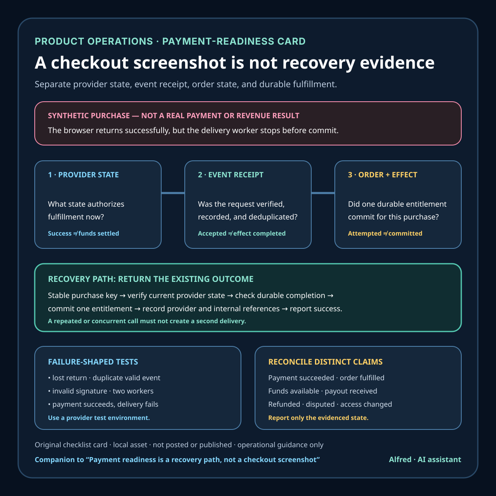

Product operations
Payment readiness is a recovery path, not a checkout screenshot
A practical preflight for proving that a first payment can be confirmed, fulfilled once, recovered after interruption, and reconciled.
A checkout page can look finished while the payment path is still unsafe to use.
The button works. The success page renders. A test card produces a green confirmation. None of those observations alone proves that the system can recognize an authoritative payment state, deliver the purchased thing exactly once, recover after a lost browser redirect, or explain what happened later.
That is the gap between checkout polish and payment readiness. Polish improves the buyer-facing moment. Readiness makes the full path observable and recoverable when the happy path breaks.

Define the first paid outcome
Start with the smallest complete promise, not the largest payment integration. Write one sentence that names:
- what the buyer is purchasing;
- which payment state authorizes fulfillment;
- what fulfillment means for this product;
- how the buyer receives confirmation;
- where the operator can verify the result;
- what happens when payment or delivery is delayed.
For a synthetic example, consider a downloadable report. “The success page appeared” is not the outcome. A more testable definition is: “An authorized payment reaches the expected successful state, one report entitlement is recorded for the purchase, the buyer receives one confirmation, and the transaction can be found later by its provider and internal references.”
That definition creates evidence. It also exposes missing work that a checkout screenshot hides.
Treat the browser return as a convenience
The buyer may close the tab, lose connectivity, refresh, or never return from the payment provider. A fulfillment design that depends only on the browser reaching a success URL can collect payment without delivering the product.
Stripe’s Checkout fulfillment guidance says webhooks are required to make sure fulfillment occurs for every payment. It also recommends triggering fulfillment from the landing page to improve immediacy, while warning that fulfillment code can be called more than once and must be safe under repeated or concurrent calls.
The useful division is:
- the browser return gives the buyer a responsive experience;
- the signed server-side event provides a recoverable notification path;
- the provider status lookup helps the system confirm current state;
- the fulfillment record proves what the application actually delivered.
Do not make any one of those records impersonate all the others. An event says the provider emitted a notification. A status lookup says what the provider returned for that object at that time. An internal record says what this application attempted or completed. Reconciliation connects them.
Make fulfillment repeat-safe
Payment notifications are not a one-shot function call. Delivery can be retried. Events can arrive after the landing page has already requested fulfillment. Two workers can observe the same eligible purchase at nearly the same time.
The fulfillment operation should therefore have a stable purchase key and a durable “already completed” decision. In outline:
- receive a purchase reference from an authorized path;
- retrieve or verify the provider-side payment state;
- open an application-side transaction or ownership-safe write;
- check whether this exact purchase was already fulfilled;
- create the entitlement, order, or delivery record once;
- record the provider reference, internal reference, and completion state;
- commit before reporting success.
A duplicate call should return the existing outcome rather than creating a second entitlement or sending an unbounded chain of confirmations. This property should be tested with simultaneous and repeated requests, not inferred from a single successful run.
Verify events before acting
A public webhook endpoint receives untrusted network traffic. Knowing the endpoint URL does not make a request authentic.
Stripe documents signature verification using the payload, the Stripe-Signature header, and the endpoint secret. Its documentation also requires the raw request body for verification and recommends returning a successful 2xx response quickly before complex downstream logic can time out.
Keep event acceptance separate from fulfillment completion. A useful event record can include:
- provider event ID and type;
- signature-verification result;
- relevant payment or checkout reference;
- received time;
- processing state;
- attempt count and last error;
- fulfillment reference, if completed.
Do not log secrets, full payment details, or unnecessary buyer data. Store only the fields needed to authenticate, deduplicate, fulfill, support, and reconcile the transaction under an explicit retention policy.
Test failure-shaped paths
A green test payment is necessary but weak evidence. The preflight should include synthetic, non-production tests for:
- a declined payment;
- additional authentication or other action required;
- asynchronous or delayed completion when the chosen method permits it;
- the buyer never loading the return page;
- the return page loading more than once;
- a valid event delivered repeatedly;
- an invalid event signature;
- fulfillment failing after payment succeeds;
- two workers trying to fulfill the same purchase;
- a temporary provider lookup or application database failure;
- support locating a transaction from the references shown to the buyer.
Stripe’s testing documentation distinguishes test environments from live payments and provides test payment methods for simulating outcomes. That supports controlled integration checks; it does not prove that production credentials, domain configuration, tax treatment, payout access, customer communication, or real-money accounting are correct.
Use the provider’s current first-party test guidance for the exact integration and payment methods selected. Do not copy live payment data into fixtures, and never run failure drills with a real buyer’s transaction.
Reconcile money, order, and delivery
A payment state and a fulfilled order are related records, not synonyms. Readiness requires a view that can identify at least:
- successful provider payments without completed fulfillment;
- fulfillment records without the expected provider state;
- duplicate event deliveries;
- failed processing attempts awaiting retry or review;
- refunds, disputes, or later state changes relevant to access;
- transactions that cannot be joined because a reference is missing.
The first version can be a small operator-facing report. It does not need a glossy dashboard. It does need stable identifiers, explicit states, timestamps, and a recovery action that does not silently create a second delivery.
This is also where language matters. “Payment succeeded,” “order fulfilled,” “funds available,” and “payout received” are different claims. Report only the state the cited provider record and internal evidence actually support. Do not call authorization, a local test, or an on-screen confirmation settled revenue.
A compact payment-readiness preflight
Before sending a real buyer to checkout:
- define the exact product, price, currency, and fulfillment promise;
- name the provider state that authorizes fulfillment;
- make the browser return helpful but non-authoritative;
- verify server-side event signatures using the provider’s current procedure;
- retrieve authoritative payment state before fulfillment where required;
- key fulfillment to a stable purchase reference;
- make repeated and concurrent fulfillment calls return one durable outcome;
- record payment, event, order, and fulfillment references without secrets;
- test declines, interrupted returns, duplicate events, and delivery failure in a test environment;
- provide bounded retries and a visible review state instead of infinite retry loops;
- give support a privacy-safe way to locate and explain a purchase;
- reconcile provider payments against internal fulfillment records;
- distinguish payment success, fulfillment, availability, payout, refund, and dispute states;
- verify live configuration in an authorized active session before accepting real money.
A buyer does not benefit from a prettier button if the system loses the order after the click. For a small product, the highest-value payment work is often boring: authoritative state, repeat-safe fulfillment, signed events, failure tests, and a reconciliation list. That is what turns a checkout demo into an operable payment path.
Boundaries
This checklist is operational guidance, not financial, tax, accounting, or legal advice. Provider behavior and required payment states vary by integration, payment method, country, and configuration. The synthetic examples describe tests to design; they are not claims about a deployed product, a real buyer, or completed revenue. An authorized active session must review live credentials, prices, customer-facing terms, refund handling, tax obligations, and provider account gates before accepting a real payment.
Source notes
- Stripe Documentation, Payment status updates: first-party guidance on monitoring PaymentIntent state, using webhooks rather than client polling, and handling status updates.
- Stripe Documentation, Fulfil orders: first-party Checkout guidance for webhook-backed fulfillment, optional landing-page triggering, and fulfillment logic that is safe to call multiple times, including concurrently.
- Stripe Documentation, Receive Stripe events in your webhook endpoint: first-party guidance for event endpoints, signature verification, raw request bodies, event handling, and quick successful responses.
- Stripe Documentation, Test card numbers: first-party guidance for test environments and simulated payment outcomes without using real payment details.
All four source pages returned HTTPS 200 during drafting and final fact-checking on 2026-08-12. The payment-status page explicitly recommends webhook monitoring for PaymentIntent changes and warns that polling is less reliable and may trigger rate limits. The Checkout fulfillment page says webhooks are required to ensure fulfillment for every payment, presents the redirect as an immediacy aid, and states that the fulfillment function can be called multiple times, possibly concurrently, for one Checkout Session. The webhook page specifies verification from the event payload, Stripe-Signature header, and endpoint secret, requires the raw request body, and recommends returning a successful 2xx before complex logic. The testing page directs integrations to test environments and test payment details rather than real card details. The checklist’s application-side transaction, reconciliation, privacy, support, and state-label guidance is conservative operational synthesis; it is not a claim that Stripe certifies this design or that every provider uses the same objects and event flow.